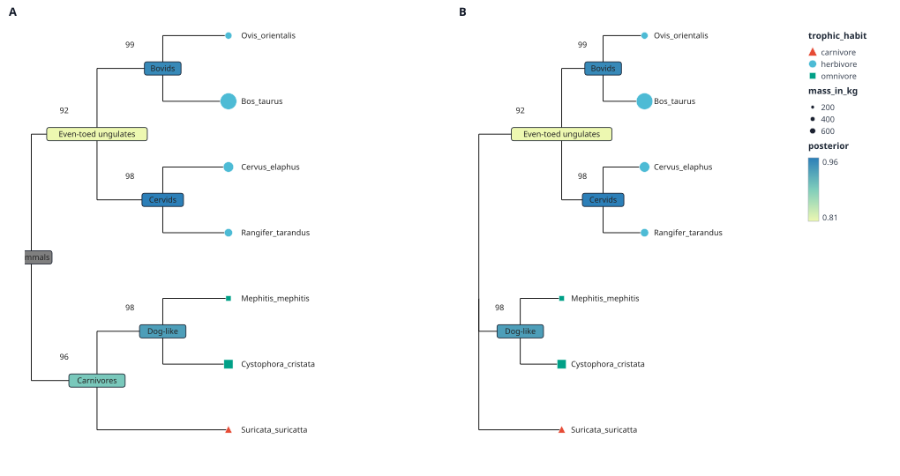
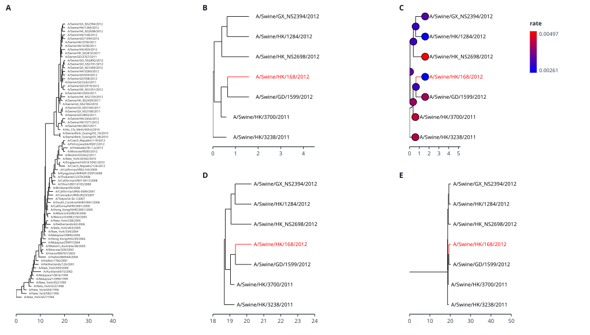
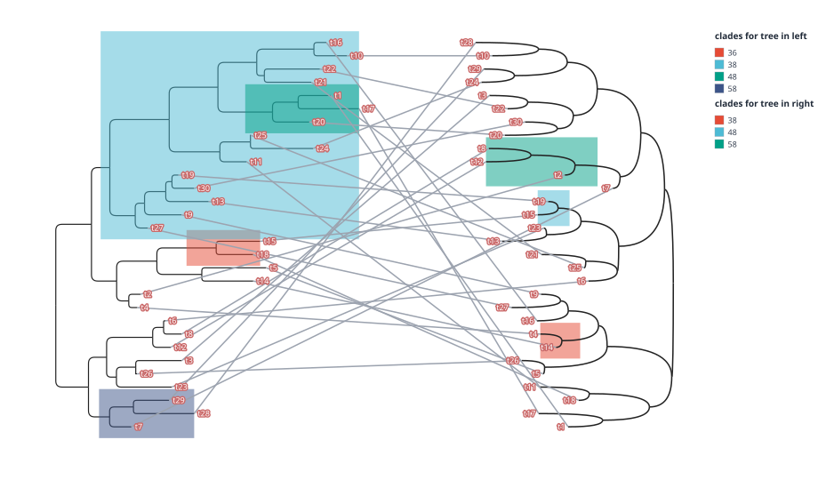
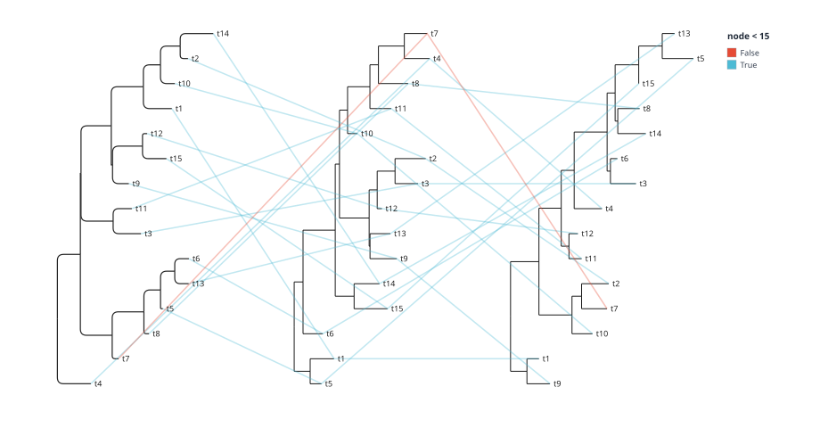

2. Manipulating Tree with Data
Integrating evolutionary inference outputs and external experimental metadata should never require fragile row-reordering hacks. ggtree-py implements tidytree tidy verbs, tree-data merging, rerooting, rescaling, subsetting, and multi-tree co-plotting helpers.
2.1 Combining Tree Data with merge_tree()
Separate analyses run on the same taxon topology—such as a dated BEAST tree and a CodeML selection run—can be combined with merge_tree() so joint distributions of rates, dN, dS, and dN/dS can be explored cleanly via fortify(), gather(), and geom_hex().

▶ Show / Hide Python Code read_beastread_codemlmerge_treefortify
beast_tree = read_beast(system_file("extdata", "MCC_FluA_H3.tree"))
codeml_tree = read_codeml(
system_file("extdata", "rst"),
system_file("extdata", "mlc"),
)
merged_tree = merge_tree(beast_tree, codeml_tree)
raw = fortify(merged_tree)
recs = [
r for r in raw.to_records()
if isinstance(r.get("dN_vs_dS"), (int, float))
and isinstance(r.get("rate"), (int, float))
and 0.0 <= float(r["dN_vs_dS"]) <= 1.5
]
df = DataFrame({
"rate": [float(r["rate"]) for r in recs],
"dN_vs_dS": [float(r["dN_vs_dS"]) for r in recs],
"dN": [float(r["dN"]) if r.get("dN") is not None else float("nan") for r in recs],
"dS": [float(r["dS"]) if r.get("dS") is not None else float("nan") for r in recs],
})
df_long = gather(df, "type", "value", "dN_vs_dS", "dN", "dS")
remap = {"dN_vs_dS": "dN/dS", "dN": "dN", "dS": "dS"}
df_long["type"] = factor(
[remap.get(str(v), str(v)) for v in df_long["type"].tolist()],
levels=["dN/dS", "dN", "dS"],
)
p = (
ggplot(df_long, aes("rate", "value"))
+ geom_hex(bins=22)
+ facet_wrap("~type", scales="free_y")
+ xlab("rate")
+ ylab("")
)
p
2.2 Joining External Tables & Rerooting Trees
Using left_join() merges tip and internal-node attribute tables (resolving duplicate columns with suffixes like .x and .y), while root(trda, outgroup=..., edgelabel=True) reroots topologies while keeping edge and node annotations properly synchronized.

▶ Show / Hide Python Code read_treeread_tableleft_joinroot
tr_boots = read_tree(system_file("extdata", "TDbook", "tree_boots.nwk"))
df_tip = read_table(system_file("extdata", "TDbook", "df_tip_data.tsv"), header=True, sep="\t")
df_inode = read_table(system_file("extdata", "TDbook", "df_inode_data.tsv"), header=True, sep="\t")
trda = left_join(tr_boots, df_tip, by={"label": "Newick_label"})
trda = left_join(trda, df_inode, by={"label": "newick_label"})
trda2 = root(trda, outgroup="Suricata_suricatta", edgelabel=True)
def _build_panel(td, x_hi: float, show_legend: bool):
p = (
ggtree(td)
+ geom_nodelab(aes(x="branch", label="bootstrap"), nudge_y=0.36, hjust=0.5, size=2.7)
+ geom_tippoint(aes(shape="trophic_habit", color="trophic_habit", size="mass_in_kg"))
+ scale_size_continuous(range=(2.0, 5.2))
+ geom_tiplab(offset=0.14, size=2.9)
+ geom_nodelab(aes(label="vernacularName.y", fill="posterior"), geom="label", size=2.6)
+ scale_fill_gradientn(colors=["#EDF8B1", "#7FCDBB", "#2C7FB8"])
+ xlim(-0.1, x_hi)
)
if not show_legend:
p = p + theme(legend_position="none")
return p
plot_list(_build_panel(trda, 4.8, False), _build_panel(trda2, 5.8, True), ncol=2, tag_levels="A")
2.3 Rescaling Tree Branches
rescale_tree(merged_tree, branch_length='dN') replaces raw branch lengths with any numeric annotation column (such as dN or evolutionary rate), enabling side-by-side evolutionary comparisons.

▶ Show / Hide Python Code merge_treerescale_treeggtreetheme_tree2
beast_tree = read_beast(system_file("extdata", "MCC_FluA_H3.tree"))
codeml_tree = read_codeml(
system_file("extdata", "rst"),
system_file("extdata", "mlc"),
)
merged_tree = merge_tree(beast_tree, codeml_tree)
p1 = ggtree(merged_tree) + theme_tree2()
p2 = ggtree(rescale_tree(merged_tree, "dN")) + theme_tree2()
p3 = ggtree(rescale_tree(merged_tree, "rate")) + theme_tree2()
plot_list(p1, p2, p3, ncol=3, tag_levels="A")
2.4 Subsetting and Pruning Trees
drop_tip() prunes unwanted taxa while remapping associated TreeData attributes cleanly. For large phylogenies, tree_subset() isolates local focal neighborhoods by tip label or internal node ID—tracking ancestry groups, preserved node data, and optional root_edge stems via geom_rootedge().

▶ Show / Hide Python Code read_nhxdrop_tipggtreescale_color_manual
nhx = read_nhx(system_file("extdata", "NHX", "phyldog.nhx"))
to_drop = [
"Physonect_sp_@2066767",
"Lychnagalma_utricularia@2253871",
"Kephyes_ovata@2606431",
]
p1 = (
ggtree(nhx)
+ geom_tiplab(aes(color="label %in% to_drop"), size=2.8)
+ scale_color_manual(values=["black", "red"])
+ xlim(0, 0.85)
)
nhx_reduced = drop_tip(nhx, to_drop)
p2 = (
ggtree(nhx_reduced)
+ geom_tiplab(size=2.8)
+ xlim(0, 0.85)
)
plot_list(p1, p2, ncol=2, tag_levels="A")

▶ Show / Hide Python Code read_beasttree_subsetggtreegeom_rootedge
beast_tree = read_beast(system_file("extdata", "MCC_FluA_H3.tree"))
tree2 = tree_subset(beast_tree, "A/Swine/HK/168/2012", levels_back=4)
p1 = ggtree(beast_tree) + geom_tiplab(offset=0.05, size=1.8) + xlim(0, 40) + theme_tree2()
p2 = (
ggtree(tree2, aes(color="group"))
+ scale_color_manual(values=["black", "red"], guide="none")
+ geom_tiplab(offset=0.2, size=2.4)
+ xlim(0, 4.5)
+ theme_tree2()
)
p3 = (
p2
+ geom_point(aes(fill="rate"), color="black", shape=21, size=3.4)
+ scale_fill_continuous(low="blue", high="red")
+ xlim(0, 5.2)
+ theme(legend_position="right")
)
p4 = (
ggtree(tree2, aes(color="group"), root_position=tree2.root_edge)
+ geom_tiplab(size=2.4)
+ xlim(18, 24)
+ scale_color_manual(values=["black", "red"], guide="none")
+ theme_tree2()
)
p5 = p4 + geom_rootedge(rootedge=tree2.root_edge) + xlim(0, 50)
plot_list(p1, p2, p3, p4, p5, design="AABBCC\nAADDEE", tag_levels="A")

▶ Show / Hide Python Code read_beastread_treeMRCAtree_subset
beast_tree = read_beast(system_file("extdata", "MCC_FluA_H3.tree"))
clade = tree_subset(beast_tree, 121, levels_back=0)
clade2 = tree_subset(beast_tree, 121, levels_back=2)
p1 = ggtree(clade) + geom_tiplab(size=2.1) + hexpand(0.55)
p2 = (
ggtree(clade2, aes(color="group"))
+ geom_tiplab(size=1.9)
+ scale_color_manual(values=["black", "red"])
+ hexpand(0.55)
)
chiroptera = read_tree(system_file("extdata", "TDbook", "chiroptera.nwk"))
plecotus_tips = [t for t in chiroptera.tip_label if "Plecotus" in t]
ch_grp = groupOTU(chiroptera, plecotus_tips)
plec_clade = MRCA(chiroptera, plecotus_tips)
sub_plec = tree_subset(chiroptera, plec_clade, levels_back=0)
p3 = (
ggtree(ch_grp, aes(color="group"), size=0.35)
+ scale_color_manual(values=["black", "red"])
+ theme(legend_position="none")
)
p4 = ggtree(sub_plec) + geom_tiplab(size=2.8) + xlim(0, 6.0)
plot_list(p1, p2, p3, p4, ncol=2, nrow=2, tag_levels="A")
2.5 Visualizing Multiple Trees Together
Shifted or mirrored fortified tree frames (fortify(tr)) can be layered into a single canvas via geom_tree(data=d2, layout=...) alongside dual independent highlight scales (new_scale_fill()), shadowtext labels, and cross-tree correspondence lines.

▶ Show / Hide Python Code rtreeggtreegeom_treegeom_hilight
set_seed(1024)
x = rtree(30)
y = rtree(30)
p1 = ggtree(x, layout="roundrect")
d1 = fortify(x)
d2 = fortify(y)
max_d1 = max(d1["x"].tolist())
max_d2 = max(d2["x"].tolist())
d2["x"] = [max_d2 - float(vx) + max_d1 + 1.8 for vx in d2["x"].tolist()]
tip1 = [r for r in d1.to_records() if r.get("isTip")]
tip2 = [r for r in d2.to_records() if r.get("isTip")]
dd = DataFrame({
"label": [str(r["label"]) for r in tip1] + [str(r["label"]) for r in tip2],
"x": [float(r["x"]) for r in tip1] + [float(r["x"]) for r in tip2],
"y": [float(r["y"]) for r in tip1] + [float(r["y"]) for r in tip2],
})
p = (
p1
+ geom_hilight(mapping=aes(subset="node %in% c(38, 48, 58, 36)", fill="as.factor(node)"))
+ labs(fill="clades for tree in left")
+ new_scale_fill()
+ geom_hilight(data=d2, mapping=aes(subset="node %in% c(38, 48, 58)", fill="as.factor(node)"))
+ labs(fill="clades for tree in right")
+ geom_tree(data=d2, layout="ellipse")
+ geom_line(aes("x", "y", group="label"), data=dd, color="#9CA3AF")
+ geom_tiplab(color="white", geom="shadowtext", bg_colour="#CA6767", size=2.9)
+ geom_tiplab(data=d2, hjust=1, color="white", geom="shadowtext", bg_colour="#CA6767", size=2.9)
)
p

▶ Show / Hide Python Code rtreefortifyggtreegeom_tree
set_seed(2020)
x = rtree(15)
y = rtree(15)
z = rtree(15)
d1 = fortify(x)
d2 = fortify(y)
d3 = fortify(z)
shift2 = max(d1["x"].tolist()) + 2.4
d2["x"] = [float(vx) + shift2 for vx in d2["x"].tolist()]
shift3 = max(d2["x"].tolist()) + 2.4
d3["x"] = [float(vx) + shift3 for vx in d3["x"].tolist()]
tips = [r for r in (d1.to_records() + d2.to_records() + d3.to_records()) if r.get("isTip")]
dd = DataFrame({
"label": [str(r["label"]) for r in tips],
"x": [float(r["x"]) for r in tips],
"y": [float(r["y"]) for r in tips],
"node": [int(r["node"]) for r in tips],
})
p = (
ggtree(x, layout="roundrect")
+ geom_tree(data=d2)
+ geom_tree(data=d3)
+ geom_line(aes("x", "y", group="label", color="node < 15"), data=dd, alpha=0.35)
+ geom_tiplab(size=2.9)
+ geom_tiplab(data=d2, size=2.9)
+ geom_tiplab(data=d3, size=2.9)
+ hexpand(0.08)
)
p